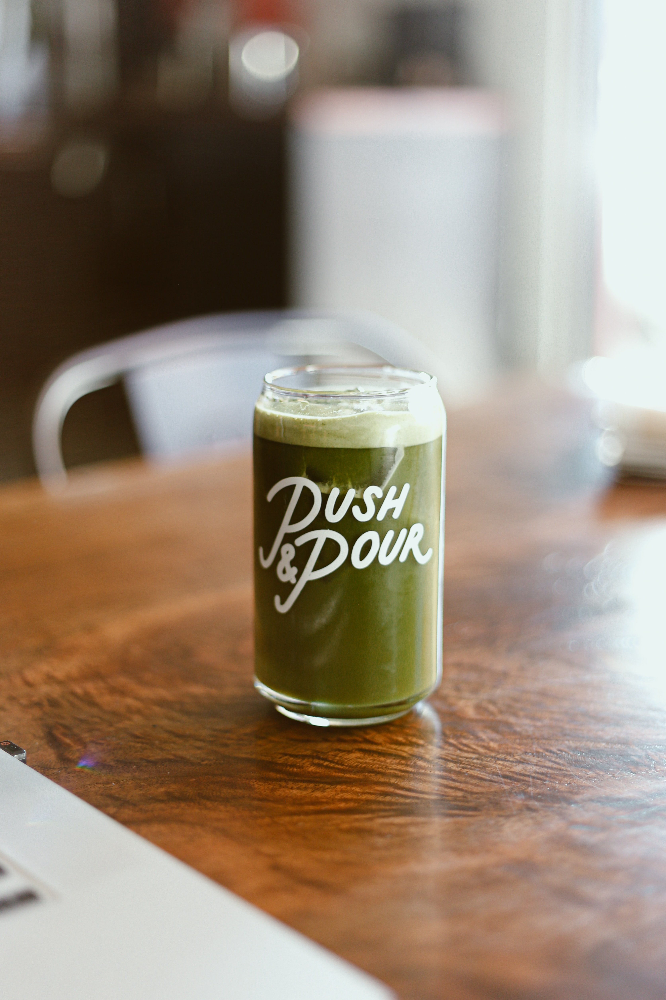

PLAYLIST
Sia-Helium

I'm trying but I keep falling down
I cry out but nothing comes now
I'm giving my all and I know peace will come
I never wanted to need someone
Yeah, I wanted to play tough, thought I0ould do all this on my own
But even Superwoman sometimes needed Superman's soul
Help me out of this hell
Your love lifts me up like helium
Your love lifts me up when I'm down, down, down, when I've hit the ground
You're all I need
And if you let go, I'll float towards the sun
I'm stronger 'cause you fill me up
But when the fear comes and I drift towards the ground
I am lucky that you're around
Yeah, I wanted to play tough, thought I could do all this on my own
But even Superwoman sometimes needed Superman's soul
Help me out of this hell
Your love lifts me up like helium
Your love lifts me up when I'm down, down, down, when I've hit the ground
You're all I need
'Cause your love lifts me up like helium
Your love lifts me up like helium
You lift me up and I am found
You lift me up before I hit the ground
You lift me up when I am down, down, down
You lift me up before I hit the ground
You lift me up and I am found
You lift me up before I hit the ground
You lift me up when I'm down, down, down
You lift me up before I hit the ground
Your love lifts me up like helium
Your love lifts me up when I'm down, down, down, when I've hit the ground
You're all I need
'Cause your love lifts me up like helium
Your love lifts me up like helium
Your love lifts me up like helium
Your love lifts me up like helium